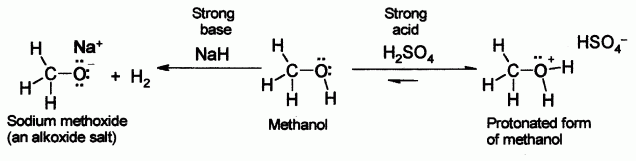
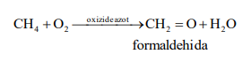

Compusi organici cu grupe functionale simple
COMPUSI ORGANICI CU GRUPE FUNCTIONALE
Majoritatea compuşilor organici conţin pe lângă carbon şi hidrogen şi alte elemente organogene, care alcătuiesc aşa-numitele grupe (grupări) funcţionale. Prezenţa lor presupune înlocuirea unuia sau mai multor atomi de hidrogen din molecula unei hidrocarburi cu atomi sau grupuri de atomi ai elementelor organogene.
Grupările funcţionale sunt clasificate după valenţa lor, care reprezintă numărul de atomi de hidrogen înlocuiţi la acelaşi atom de carbon al unei hidrocarburi saturate. Astfel, există grupe funcţionale monovalente, divalente, trivalente şi chiar tetravalente. Un compus organic poate conţine o singură grupă funcţională sau mai multe – în acest ultim caz grupele funcţionale pot fi identice sau diferite.
ALCOOLI
În chimia organică, un alcool este un compus organic hidroxilic, care conține o grupă funcțională hidroxil (-OH), aceasta fiind legată de un atom de carbon saturat, în starea de hibridizare sp³. Grupa hidroxil poate fi legată de o catenă saturată, din partea saturată a catenei unei alchene, sau de catena laterală a unei hidrocarburi aromatice. Formula generală pentru un alcool simplu, aciclic, este CnH2n+1OH.
Există trei mari categorii de alcooli- 'primari' (1°), 'secundari' (2°) și 'terțiari' (3°), bazate pe numărul de carboni de care este legat carbonul C-OH (evidențiat cu roșu). Metanolul este cel mai simplu alcool primar. Cel mai simplu alcool secundar este izopropanol (propan-2-ol) și cel mai simplu alcool terțiar este terț-butanol (2-metilpropan-2-ol).
După natura radicalilor de care se leagă grupa funcțională hidroxil, alcooli pot fi saturați (proveniți de la alcani), nesaturați (proveniți de la alchene sau alchine) sau aromatici (proveniți de la arene).
Cei mai simpli și cei mai folosiți alcooli sunt metanolul și etanolul (numele comune sunt alcool metilic și alcool etilic), care au structurile de mai sus.
Metanolul se obținea în trecut prin distilarea lemnului, de aceea se numea „alcool de lemn". În prezent, este o substanță chimică la îndemâna oricui, care se produce prin reacția la presiune a monoxidului de carbon cu hidrogenul. În limbajul colocvial, termenul de „alcool" denumește deseori etanolul sau „alcool de cereale". Spirtul metilat, numit și "spirt medicinal", este o formă de etanol devenit necomestibil prin adăugarea de metanol și coloranți de regulă albastru de metil. Pe lângă utilizarea principală în băuturile alcoolice, etanolul este folosit (deși foarte bine controlat) drept solvent industrial și materie primă.
Utilizari: Alcoolii sunt folosiți la scară largă în industrie și știință, drept reactanți, solvenți combustibili. Etanolul și metanolul pot arde creând mai puține substanțe nocive decât benzina sau motorina. Datorită toxicității scăzute și capacității de a dizolva substanțe nepolare, etanolul este folosit deseori ca solvent în medicamente, parfumuri și esențe vegetale, precum vanilia. În sinteza organică, alcoolii apar deseori ca intermediari adaptabili.
Etanolul este, de asemenea, folosit frecvent în băuturi după fermentație pentru a evidenția aromele sau pentru a induce intoxicarea euforică numită "beție". Utilizarea etanolului pentru acest scop este interzisă în unele jurisdicții. În asemenea cazuri de consum, alcoolul este un drog psihoactiv, cu un potențial imediat de supradoză, otrăvire și dependență fiziologică (știută ca alcoolism). Alcoolismul a devenit una dintre cele mai comune cauze de dependență (poate după cafeină) din lume. Dependența fiziologică cauzată de alcoolism înseamnă că persoana dependentă trece prin sevraj (sub forma unei dureri de cap cunoscută ca "mahmureală," unei anxietăți crescute, știută ca "friguri" și oboseală sau probleme cu somnul) la încetarea sau descreșterea folosirii.
Proprietati fizice si chimice:
Gruparea hidroxil face ca, în general, alcoolul să fie moleculă polară. Acele grupări pot forma legături de hidrogen una cu alta și cu alți compuși. La alcooli există două posibilități de dizolvare: tendința grupei polare -OH de a îl face solubil în apă și cea a catenei laterale de a i se opune. De aceea, metanolul, etanolul și propanolul sunt solubile în apă deoarece influența grupării hidroxil este mai puternică decât cea a catenei. Butanolul, cu patru carboni în catenă, este moderat solubil datorită echilibrului dintre cele două tendințe. Alcoolii cu cinci sau mai mulți carboni (pentanol sau mai mari) sunt insolubili în apă datorită dominării catenei laterale.
Datorită legăturii de hidrogen, alcoolii tind să aibă puncte de fierbere mai ridicate față de hidrocarburi și eteri. Toți alcoolii simpli sunt solubili în solvenți organici. Legăturile de hidrogen arată că alcoolii pot fi folosiți ca solvenți protici.
Orbitalul dielectronic al oxigenului hidroxilului formează alcoolii nucleofili.
Alcoolii, ca și apa, pot avea fie proprietăți acide, fie bazice la gruparea O-H. Cu un pKa de în jur de 16-19, sunt ușor mai puțin acizi decât apa, dar sunt capabili să recționeze cu baze puternice precum hidrură de sodiu sau cu metale reactive precum sodiul. Sărurile care rezultă se numesc alcoxizi, având formula generală RO- M+.
Alcoolii legați de nuclee benzenice au o aciditate mai scăzută (un pKa în jur de 10). Grupările care iau electroni participă la creșterea acidității alcoolilor. De exemplu, para-nitro fenolul are un pKa de 7,15.
Oxigenul are un orbital dielectronic pe ultimul strat, ceea ce face alcoolul slab bazic în prezența unor acizi tari, precum acidul sulfuric. De exemplu, cu metanol:
Toxicitate:
Etanolul a fost consumat de oameni încă din preistorie sub forma băuturilor alcoolice, pentru o varietate de motive: igienice, alimentare, medicinale, religioase, distractive. Deși consumul rar de etanol în cantități mici nu are efecte negative, ci dimpotrivă, dozele mai mari duc la starea numită "ebrietate" sau intoxicare și, depinzând de doză și de regularitatea consumului, poate cauza probleme respiratorii acute sau decesul, iar ingestia cronică are repercusiuni medicale grave.
Alți alcooli sunt mult mai otrăvitori decât etanolul, în mare parte pentru că durează mai mult până să fie metabolizați, iar nu de puține ori metabolismul lor duce la apariția unor substanțe mai toxice. Metanolul, sau alcoolul de lemn, de exemplu, este oxidat de enzime în ficat și duce la crearea formaldehidei, care poate cauza orbirea sau moartea.
Un tratament eficient pentru prevenirea toxicității cu formaldehidă după ingestia de metanol este administrarea de etanol. Aceasta va preveni transformarea metanolului în formaldehidă, iar formaldehida existentă va fi convertită în acid formic și eliminată prin excreție înainte de a provoca vreun rău.
Preparare:
În laborator:
Compusii halogenati alifatici reacționează cu hidroxidul de sodiu sau hidroxid de potasiu, obținându-se astfel alcooli
Aldehideele sau cetonele sunt reduse cu borohidrură de sodiu sau hidroborat de litiu la alcooli.
Alchenele adiționează apa, într-un mediu acid, folosind drept catalizator acid sulfuric concentrat.
În industrie:
prin fermentație folosind glucoză produsă de zahăr, obținând hidroliza amidonului, în prezența drojdiei și a unei temperaturi de sub 37 °C pentru producerea etanolului.
Prin hidratare directă: folosind etenă sau alte alchene, cu un catalizator de acid fosforic, la temperatură și presiune mari.
Metanolul este produs din vapori de apă: este creat din gaz sintetizat, unde monoxidul de carbon și doi echivalenți ai hidrogenului sunt combinați pentru producerea metanolului, folosind drept catalizatori cupru, oxid de zinc și oxid de aluminiu la 250 °C și o presiune de 50-100 atm.
FENOLI:

Fenolii reprezintă o clasă de compuși organici cu un nucleu aromatic, în a căror structură intră una sau mai multe grupe -OH hidroxil „grefate” (legate) pe nucleu. Cel mai simplu și primul reprezentant al clasei se numește chiar fenol (sau acid fenic) și are formula C6H5OH.
Fenolii sunt clasificați în funcție de numărul unităților fenolice în fenoli simplii și în polifenoli.
Proprietati fizice si chimice:
Fenolii sunt puțin solubili în apă, dar ușor solubili în alcooli și eteri. Sunt substanțe solide, cu miros în general caracteristic, neplăcut.
Cu toate că au gruparea hidroxilică, fenolii au o structură asemănătoare cu alcoolii, fenolii sunt acizi mai tari decât aceștia, întrucât nucleul aromatic crește aciditate. Astfel, fenolii reacționează nu numai cu alcalii (metale alcaline și alcalino-pământoase), dar și cu bazele tari ale acestora, formând săruri ionice numite fenoxizi.
DERIVATI HALOGENATI:
Derivaţii halogenaţi sunt compuşii organici care conţin în molecula unul sau mai mulţi atomi de halogen. Aceştia au forma R-X (unde X poate fi F, Cl, Br sau I).
Pentru a denumi derivaţii halogenaţi, se indică poziţia în catenă sau nucleu, natura halogenului şi numele hidrocarburii. Uzual, aceşti compuşi pot fi denumiţi şi sub forma: halogenură de numele radicalului (exemplu: clorură de etil)
Exemple de derivaţi halogenaţi şi denumiri:
Clasificare:
A) după natura radicalului:
- alifactic, care poate fi atât saturat, cât şi nesaturat:
CH3-Cl ( clorometan / clorura de metil)
CH2=CH-CH2Cl (clorura de alil)
- aromatic:
B) după natura halogenului, compuşii pot fi fluoruraţi, cloruraţi, bromuraţi, ioduraţi sau micşti:
CF2=CF2 (tetrafluoroetenă)
CH3-CH2-Cl (clorură de etil / cloroetan)
CH3-I (iodometan)
CH3-Br (bromometan)
CF2Cl2 (diclorodifluorometan)
C) după numărul atomilor de halogen:
- monohalogenaţi: CH3-CH2-CH2-Cl (clorură de n-propil / cloropropan)
- polihalogenaţi: C6H6Cl6 (hexaclorociclohexan)
D) după poziţia atomilor de halogen
- derivaţi halogenaţi geminali: CH3-CH2-CHCl2 (1,1-dicloropropan)
- derivaţi halogenaţi vicinali: CH2Br-CHBr-CH3 (1,2-dibromopropan)
- derivaţi halogenaţi izolaţi: CH2Cl-CH2-CH2Cl (1,3-dicloropropan)
Derivaţii halogenaţi sunt caracterizaţi de câteva proprietăţi fizice:
- Starea de agregare: compuşii pot fi solizi, lichizi sau gazoşi;
- Punctul de topire: indică temperatura necesară pentru a schimba starea de agregare de la solid la lichid;
- Punctul de fierbere: indică temperatura necesară pentru a schimba starea de agregare de la lichid la gazos.
Starea de agregare, precum şi punctele de topire şi fierbere diferă de la compus la compus!
- Solubilitatea: deoarece au în structura lor legături covalente polare carbon - halogen,compuşii halogenaţi sunt solubili în solvenţi polari (etanol, acetonă etc), dar aproape insolubili în solvenţi nepolari şi în apă (în general, o substanţă este solubilă în apă, dacă poate forma cu moleculele acesteia legături de hidrogen).
Reactivitatea derivaţilor halogenaţi depinde de:
I) Natura atomului de halogen
II) Natura radicalului hidrocarbonat:
-reactivitate normală : derivaţi de la alcani şi cicloalcani;
- reactivitate mărită : compuşi ce au halogen în poziţia alilică sau benzenică;
- reactivitate redusă : compuşi ce au halogenul legat de atomul de carbon al legăturii duble (vinilic) sau de nucleul benzenic (aromatic).
AMINE:
Aminele sunt compuși organici care conțin în molecula lor gruparea amino (-NH2) legată de un radical hidrocarbonat. Aminele sunt asemănătoare din punct de vedere structural cu amoniacul, cu diferența că unul sau mai mulți atomi de hidrogen sunt înlocuiți cu substituenți precum grupe alchil sau aril. Formula generală a aminelor este de forma R-NH2.
Deoarece aminele pot fi considerate ca produși rezultați din înlocuirea atomilor de hidrogen din amoniac cu radicali alchil, ele pot fi:
Amine primare - din molecula de amoniac se înlocuiește un singur atom de hidrogen.
Amine secundare - Din molecula de amoniac se înlocuiesc doi atomi de hidrogen.
Amine terțiare - Din molecula de amoniac se înlocuiesc toți trei atomii de hidrogen.
Amine alifatice, aromatice si mixte:
În locul hidrogenilor din molecula de amoniac se vor lega radicali. În funcție de tipul acestora, aminele pot fi:
Amine alifatice - Radicalul (sau radicalii) care se leagă de atomul de azot este unul alchil.
Amine aromatice - Radicalul (sau radicalii) care se leagă de atomul de azot este unul aril.
Amine mixte - Radicalii care se leagă de atomul de azot sunt o parte alchil și alta aril.
Proprietati fizice:
Legăturile de hidrogen influențează semnificativ proprietățile aminelor primare și secundare, ca și a derivaților lor. Prin urmare, punctele de fierbere ale aminelor sunt ridicate.
Aminele inferioare, precum metil, dimetil, trimetil sau etil amina sunt gaze cu un miros de amoniac și sunt solubile în apă. Aminele cu masă moleculară medie sunt lichide, parțial solubile în apă și au un miros de pește descompus. Aminele superioare sunt solide, inodore și insolubile în apă. Cu cât numărul de carboni din catenă este mai mare, solubilitatea lor în apă scade.
Aminele alifatice sunt solubile în solvenți organici, în special în cei polari. Aminele primare reacționează cu cetonele, precum acetona, și majoritatea aminelor sunt incompatibile cu cloroformul sau tetraclorura de carbon.
Aminele aromatice, precum anilina, au punctele de fierbere mai joase decât restul, datorită imposibilității de a crea legături de hidrogen puternice. Tot de aceea solubilitatea lor în apă este redusă, deși se dizolvă în solvenți organici. Aceste amine sunt toxice și sunt foarte ușor absorbite prin piele.
Obținere:
Alchilarea amoniacului:
-cu halogeni:
Alchilarea amoniacului se face în mai multe etape, rezultând în final un amestec de amine primare, secundare, terțiare și o sare cuaternară de amoniu. Din acest amestec componenții se separă foarte greu, de aceea această metodă nu are un randament bun.
-cu alcooli:
-cu sulfat acid de metil:
Pentru a obține amine secundare sau terțiare mixte se folosește în mod special reacția anilinei cu sulfatul acid de metil (CH3OSO3H).
Proprietăți chimice:
Bazicitatea:
Aminele au un dublet electronic neparticipant la atomul de azot. Prezența acestor electroni neparticipanți conferă aminelor un caracter bazic, ei putând accepta un proton.
Cu apa reacționează doar aminele inferioare, deoarece apa este un acid slab. Pentru cele superioare se folosește reacția cu acizi (mai puțin HNO2, care are caracter oxidant și distruge grupa amino).
Nu toate aminele sunt la fel de bazice. Aminele aromatice sunt mai puțin bazice chiar decât amoniacul. Aminele primare sunt mai bazice decât amoniacul, iar la cele secundare bazicitatea este și mai crescută.
Alchilare:
Alchilarea aminelor primare duce la apariția aminelor secundare. Alchilarea acestora produce amine terțiare, iar dacă alchilarea se continuă, apar săruri cuaternare de amoniu. (ex. mai sus)
Acilare:
Acilarea aminelor înseamnă înlocuirea unuia sau a ambilor atomi de hidrogen de la gruparea amino. Deci pot fi acilate doar aminele primare și secundare, pentru că doar acestea dispun de atomi de hidrogen legați de azot. Reacția se produce tratând aminele cu acizi organici, cloruri acide sau anhidride acide.
Utilizări:
Anilina este cel mai important termen al seriei. Ea se folosește ca materie primă pentru industria coloranților, a medicamentelor și a detergenților.
Aminele primare aromatice sunt materie primă pentru fabricarea coloranților. În reacție cu acidul azotos (HNO2), formează sări de diazoniu, care se supun imediat (datorită instabilității) unor reacții de cuplare, rezultând azoderivați. Aceștia sunt puternic colorați și deci folosiți în special în industria textilă.
Printre substanțele medicamentoase rezultate din amine se numără clorfeniramina, clorpromazina, efedrina, fenilefrina, amfetamina, metamfetamina, metcatinona.
COMPUSI CARBONILICI:
Compușii carbonilici sunt substanțe organice care conțin gruparea carbonil.
Structura:
Atomul de carbon al carbonilului este hibridizat sp2 și este legat printr-o legatură σ și una π de atomul de oxigen. Gruparea este plană, distanța C=O este 1,21 A, mai mică decât C=C (1,34 A). E leg C=O = 177 kcal/mol > E leg C=C = 146 kcal/mol
Clasificarea compușilor carbonilici:
Aldehide și cetone
Aldehidele se denumesc prin adaugarea sufixului „al” la numele hidrocarburii cu același număr de atomi de carbon.
Numele cetonelor se formează prin adăugarea sufixului “-ona” la la denumirea hidrocarburii cu același număr de atomi de carbon sau din numele celor doi radicali legați de gruparea carbonil, urmat de cuvântul “cetonă”.
Metode de obținere:
1.Metode oxidative:
Oxidarea metanului în prezența oxizilor de azot

Oxidarea alcoolilor cu dicromat de potasiu
Dehidrogenarea alcoolilor în prezența catalizatorului de cupru
2.Metoda hidrolizei:
Derivații dihalogenați geminali conduc la obținerea compușilor carbonilici.
3.Adiția apei la alchine:
4.Acilarea arenelor conduce la obținerea cetonelor:
Proprietăți fizice:
Dintre aldehide, formaldehida este gaz, ea se utilizează sub forma unei concentrații de 40%numită formol. Ea este ușor solubilă în apă, are miros puternic, înțepător și sufocant.
Aldehida acetică este lichidă, foarte volatilă cu miros de mere verzi. Omologii superiori sunt substanțe lichide cu puncte de fierbere mai ridicate.
Acetona este un lichid volatil, cu miros specific și este solubilă în apă.
Benzaldehida este greu solubilă în apă și prezintă un miros de migdale amare.
Proprietăți chimice:
1.Reacția de adiție:
Adiția hidrogenului la compușii carbonilici are loc în prezența catalizatorilor de nichel, platină sau paladiu transformând aldehidele în alcooli primari, iar cetonele în alcooli secundari.
2.Reacția de condensare la compușii carbonilici se poate face cu alți compuși carbonilici sau cu fenol. Reacția de condensare între compușii carbonilici poate fi:
a. Aldolică – condensarea aldolică a comușilor carbonilici presupune existența a doi compuși, unul cu rol de componentă carbonilică (toți compușii carbonilici pot avea acest rol), iar altul cu rol de componentă metilenică (pot avea rol de componentă metilenică numai compușii carbonilici care au în poziția alfa față de gruparea carbonil gruparea metil, metilen sau metin).
Condensarea aldolică se face la temperatura camerei, dar compușii obținuți sunt instabili, elimină apă, deci are loc și condensare crotonică.
b. Crotonică – condensarea crotonică constă în deshidratarea aldolului sau cetolului cu formarea unui compus carbonilic nesaturat.
c. Condensarea formaldehidei cu fenolul conduce la obținerea unor compuși folosiți ca rășini sintetice numite fenoplaste.
Dacă reacția de condensare are loc în mediul acid se obține în prima etapă orto, orto`, dihidroxi, difenilmetan și para, para`, dihidroxi, difenilmetan, care prin policondensare conduce la obținerea novolacului.
Novolacul este un compus macromolecular filiform, utilizat pentru obținerea unor pelicule rezistente la acțiunea unor agenți chimici cu care se acoperă unele suprafețe ca: pardoseli, conducte etc.
Novolacul este solubil în alcool, soluția obținută se folosește ca lac anticoroziv și electroizolant.
3.Reacția de oxidare a compușilor carbonilici se poate face cu oxigen din aer și agenți oxidanți cum ar fi K2Cr2O7 (H2SO4) sau KMnO4 (H2SO4):
La reacția de oxidare articipă numai aldehidele.
Utilizari:
Metanalul (aldehida formica) este toxic pentru microorganisme, de aceea se folosește ca dezinfectant în stare de gaz sau în soluție apoasă de concentrație 40% numită formol sau formaldehidă.
Formaldehida denaturează proteinele și din această cauză se folosește la conservarea preparatelor anatomice. Se folosește la fabricarea oglinzilor, în industria pielăriei, la fabricarea unor coloranți, în arta fotografică. În industria chimică, cea mai importantă utilizare este ca materie primă pentru obținerea bachelitei și novolacului.
Etanalul (aldehida acetică) este utilizat la obținerea acidului acetic și la fabricarea alcoolului butilic, care este un bun dizolvant.
Benzencarbaldehida (aldahida benzoică) se folosește la sinteza unor coloranți și în industria cosmetică la parfumarea săpunurilor.
Propanona (acetona) este utilizat ca dizolvant în industria lacurilor, pentru extragerea grăsimilor, la dizolvarea acetilenei în tuburi de oțel. Se folosește ca materie primă la obținerea cloroformului și a metacrilatului de metil, care este monomer pentru obținerea plexiglasului. Este un bun solvent pentru acetatul de celuloză și pentru lacurile și filmele de nitroceluloză.